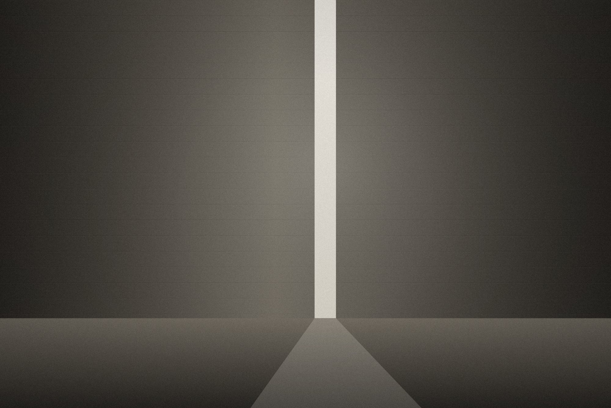

← Index
05 / 06
[ Chapel of Still Light ]
Chapel ofStill Light
A room for forty people, lit only from above.
- Year
- 2021
- Location
- Ticino, Switzerland
- Typology
- Sacred Space
- Status
- Completed
- Area
- 96 m²
- Client
- Parish of Valle Maggia
Materials
- Maggia gneissDry-laid walls
- White concreteRoof plate
- ChestnutBenches and door



[ Chapel of Still Light ]
A small chapel on a valley floor, replacing a nineteenth-century oratory lost to a flood. The brief asked only for a room for forty people and a bell.
The walls are local gneiss, laid dry by two masons over one summer. The roof is a single concrete plate held clear of the walls by a band of glass, so that light falls down the stone surfaces rather than into the room.
Chapel of Still Light by Halde Architecture Office — A. Halde, R. Bianchi
Next project — 06
Courtyard Houses →
Palma, Spain — 2020